Chapter 6
DVB-T-based passive radar for silent surveillance of drones
6.1 Introduction
Nowadays, Unmanned Aerial Vehicles (UAVs) and drones are used as threat’s vectors that create personal and public security issues [1–4]. The unpredictable and complex motion along with the small Radar Cross Section (RCS) and low velocity makes the drone detection a challenging task for any radar system [5].
In the context outlined earlier, the security level enabled by conventional active radar systems could be augmented by the cost-effective, non-intrusive and eco-friendly Passive Radar (PR) technology. As a PR system does not have its own transmitter, this allows reduced costs, intrinsic covert operation capability and the lack of additional electromagnetic pollution [6,7]. To guarantee complete and continuous coverage, PR can effectively be integrated within conventional active radars not only to extend the surveillance coverage, acting as ‘gap-filler’, but also to reduce the probability of out of service of the surveillance system. Moreover, aiming at the monitoring of airport terminal areas or harbours, where the installation of additional sensors might be limited by regulations related to public safety and risk of interference with pre-existing systems, a network of PRs could easily be deployed to provide continuous and complete coverage.
The stationary nature and the isotropic characteristic of many of the employable Illuminators of Opportunity (IoO) provide a persistent illumination of the targets of interest to generate Coherent Processing Intervals (CPIs) of long integration times (Tint) on receive to counteract the limited power density offered by the emitter. This certainly applies to many ground-based transmitters for analogue or digital radio/TV broadcasting. Among them, the emitters of the Digital Video Broadcasting-Terrestrial (DVB-T) are particularly attractive for counter-drone applications. Specifically, the high radiated power of these transmitters and the excellent coverage make them suitable for the detection of these small RCS and low altitude targets. In addition, the continuous emissions and the fine range resolution of about 20 m (equivalent monostatic range resolution yielded by a signal bandwidth of approximately 8 MHz) make them potentially able to continuously detect and discriminate closely spaced targets. Aiming at the detection of the low Signal-to-Noise Ratio (SNR) targets and at widening the DVB-T-based PR coverage area, very long integration times (up to few seconds) can be exploited if the migration effects are properly compensated [8,9]. It is worth noticing that the use of long integration time allows also to improve the Doppler resolution as well as to discriminate between slowly moving targets and clutter contributions, which is of particular interest in a scenario with a high density of targets. By employing an Orthogonal Frequency-Division Multiplexing (OFDM) modulation, DVB-T signals are noise-like waveforms; thus, they provide ambiguity function with attractive properties that are nearly independent of the signal content and almost time-invariant [10,11]. Eventually, since a DVB-T transmitter typically broadcasts multiple channels at different carrier frequencies, this provides the desired diversity of information that could be successfully exploited for both target detection and its localization [7,12,13].
Recently, different authors have investigated the use of such sensor for counter-drone operations [14–21] proving the capability of such technology to detect and localize small and medium drones up to a few kilometres from the PR receiver. Moreover, the capability of such sensor in simultaneous detection of drones flying near the airport area along with the conventional civil air traffic at farther ranges has been proved in [19,20].
This chapter reports the latest results of DVB-T-based PR for counter-drone operations obtained by the research groups of the University of Alcalá and Sapienza University of Rome. First, Section 6.2 reports a power budget analysis to provide a preliminary evaluation of the expected coverage of PR against drones. Subsequently, Section 6.3 describes the adopted processing scheme, properly tailored to be effective in the considered application. In detail, a significant effort has been devoted to the disturbance cancellation stage that represents one of the key stages within a conventional PR processing scheme. The Neyman–Pearson (NP) detector approximation and clutter modelling are investigated in Section 6.4. Multi-channel strategies, based on frequency and spatial diversity, are presented in Section 6.5 to improve the detection and localization performance of PRs. Finally, Section 6.6 draws our conclusion.
6.2 DVB-T-based PR coverage study
System coverage studies are carried out to analyse the capabilities of PRs in real scenarios. This analysis reflects how well an area can be monitored by the radar and is used to estimate the expected performance. System coverage is defined for specific target and interference models, as the maximum range where a target is detected fulfilling the Probability of Detection (PD) and Probability of False Alarm (PFA) requirements. In this section, a general methodology is presented and evaluated for a rural radar scenario and a target of interest.
6.2.1 Coverage estimation methodology
The key tool for estimating the PR coverage is the bistatic radar equation [22]:
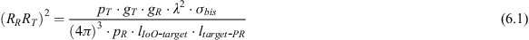
where RR and RT are target-to-receiver and target-to-transmitter distances, respectively, pT is transmitter power, pR is available power at the receiver, λ is signal wavelength, gT and gR are the gains of the transmitting and receiving antennas, respectively, σbis is target’s Bistatic RCS (BRCS), and lIoO-target and ltarget-PR are path losses associated with both IoO-target and target-PR paths, respectively. Path losses include free-space losses and diffraction and reflection effects influenced by terrain relief.
When the path losses are negligible and pR is set to the minimum signal required at the input of the RF-front end of the PR, (6.1) will allow to estimate the Cassini oval, which is widely used as a first approach for coverage calculations. Nonetheless, there are scenarios, especially those oriented to small targets at low altitudes, where path losses due to terrain relief will not be negligible, making the Cassini oval estimation very inaccurate. More precise coverage estimations can be achieved using electromagnetic simulators to compute the path losses, including relief information.
Taking into account this assumption, the radar coverage area is estimated as the area in which the presence of a target produces an acquired echo power level greater than the system sensitivity, Smin. The power collected by the PR due to the presence of a hypothetical target in a specific position of the Area of Interest (AoI) identified by the Cartesian coordinates (x,y) can be obtained from the following equation:
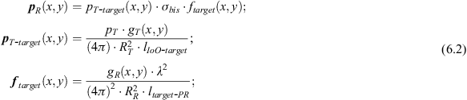
where pT-target(x,y) is the power density impinging on the target, and ftarget(x,y) is the term grouping the propagation factors and receiver antenna gain for the target and PR location. Both terms can be estimated through electromagnetic simulations. The evaluation of (6.2) at each point of the AoI produces pT-target, ftarget and pR matrices for the selected geometry, path simulation model and target characteristics. A high-accuracy-estimated coverage map is obtained after applying a threshold value determined from the system sensitivity level.
6.2.1.1 PR sensitivity computation
The sensitivity of a PR system, Smin, is defined as the minimum received power level required at the input of the RF-front end to fulfil detection requirements. Smin can be estimated from (6.3) considering the antenna temperature, Tant, the receiver noise factor, NFR, the integration gain due to the coherent processing, Gint = 10·log10(B·Tint) and the required SNR at the detector input, (S/N)DET.
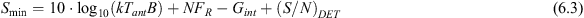
k is Boltzmann’s constant, and B is acquired signal bandwidth. (S/N)DET depends on the target and interference models, the applied detection rule and the desired PD and PFA. To obtain Smin, a margin of 5 dB is usually considered due to the presence of interference sources and clutter returns [23].
6.2.2 Coverage analysis
For a preliminary analysis and to show an example of a coverage study in as realistic conditions as possible, the capabilities of DVB-T-based PRs for detecting small-size drones are analysed in a rural scenario located in Spain. A commercial DJI Phantom 4 drone is selected as target of interest due to its reduced size and its high popularity in the civil area. The drone will be flying at low altitudes, selecting 10 m and 50 m with respect to the local topographic altitude as representative values for taking off/landing manoeuvres and usual flight altitudes.
To perform a complete coverage study, the dependencies on the operating frequency (fc), acquisition bandwidth (B) and integration time (Tint) are analysed assuming two different values for each parameter. DVB-T operating frequencies of 570 MHz and 700 MHz are selected as representative values of the low and high bands, respectively. The use of DVB-T consecutive channels has a direct impact on PR range resolution, which is exploited for improving system capabilities for detection and localization of low reflectivity targets. Because of that B = 8 MHz (one channel) and B = 24 MHz (three channels) are analysed.
In a classical PR processing scheme, Tint is limited, by the time a target remains in the same resolution cell. A target can overpass the resolution cell due to two different effects: the range walk, the movement of the target exceeds the range resolution; and the Doppler walk, the acceleration of the target (at) produces a Doppler cell migration. To avoid integration losses due to both effects, equation (6.4) should be fulfilled [24], where vt is the target speed.
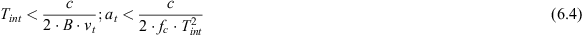
In Table 6.1, maximum Tint and at values to avoid range and Doppler walks are summarized, considering the maximum flight speed of the Phantom 4 drone, vt = 20 m/s. If longer integration times are selected, range and Doppler compensation techniques must be applied to maximize the coherent integration gain. Taking into account these results, Tint ∈ {250, 500} ms are selected for the coverage study.
Table 6.1 Tint maximum values to avoid range and Doppler migration for vt = 20 m/s
| Tint_max (s) | at_max at fc = 570 MHz (m/s2) | at_max at fc = 700 MHz (m/s2) | |
|---|---|---|---|
| B = 8 MHz | 0.937 | 0.3 | 0.24 |
| B = 24 MHz | 0.313 | 2.69 | 2.19 |
In Table 6.2, the experimental parameters selected for the coverage analysis are summarized. The coverage estimation is carried out applying the two methodologies detailed in Section 6.2.1: (1) Cassini’s ovals are obtained using (6.1) considering only free-space propagation losses, (2) coverage maps are estimated with (6.2) taking into account the path losses, including the effects of the terrain relief and the radiation antenna pattern. Path losses are calculated using WinProp (Altair Feko) electromagnetic simulator [25]. This software allows the selection of different propagation models and the integration of geographic information systems data to model the relief of the PR scenario. The accuracy of the electromagnetic estimations has a high dependence on the cell size and the precision of the relief database. Topographic data were obtained from NASA’s Shuttle Radar Topography Mission version 4.1 [26]. A configuration of 5° longitude ×5° latitude area with approximately 58×92 m2 cell size was chosen. WinProp tool was configured to compute pT-target and ftarget matrices using the Dominant Path Prediction Model as full 3D electromagnetic simulation method. The BRCS study of the Phantom 4 drone is presented in the following subsection.
Table 6.2 Experimental parameters for the coverage study
| fc (MHz) | Tint (ms) | B (MHz) | Target altitudes with respect to topographic altitude (m) |
|---|---|---|---|
| 570 and 700 | 250 and 500 | 8 and 24 | 10 and 50 |
6.2.2.1 Target BRCS estimation
Monostatic RCS studies of commercial small-size drones have been reported in the literature using numerical methods and/or experimental measurements at different operating frequencies. In [27], the RCS of a quadcopter IRIS drone is analysed in the 1–4 GHz frequency range, obtaining measurement values ranging from −18 dBsm to −1 dBsm for vertical polarization. The characterization of the RCS of a DJI Phantom 3 drone at 10 GHz is presented in [28,29]. Simulated RCS results varied between −20 dBsm and 4 dBsm for horizontal polarization and between −12 dBsm and 4 dBsm for vertical polarization. However, few studies of BRCS for small-size drones are available in the literature and they are mainly made using frequencies higher than DVB-T ones. Because of that the study of the BRCS of a Phantom 4 drone at UHF frequencies is performed in this section.
BRCS modelling is carried out using Ansys HFSS electromagnetic simulator with a full-wave simulation method [30]. The simulation geometry is defined by the incidence and observation directions, which are defined by pairs (θ, ϕ), where θ is the elevation angle measured with respect to the Earth’s surface normal, and ϕ is the azimuth one measured in the plane tangent to the Earth’s surface, with respect to the North. A bistatic angle-dependent approach is performed taking into account the radar scenario geometry: β is set to a constant value and the target model is rotated in the horizontal plane to vary the incident and associated observation directions.
The 3D model of the Phantom 4 was customized with the materials included in the datasheet for their main parts: Kevlar was selected for the main body and the blades, copper for the rotors and lithium for the battery. The following conditions were assumed for the BRCS simulations:
- Simulations were set up with an incident plane wave impinging on the centre of the target 3D model.
- The geometrical characteristics of the radar scenario determined the incidence (θi) and observation (θo) elevation angles. Due to the low flight altitudes and high distances assumed for the targets, θi and θo were set to 90°.
- Four bistatic angles were selected as representative values of the real scenarios and targets’ trajectories used in this chapter: β ∈ {0°, 30°, 60°, 90°}. The azimuth incidence angle (ϕi) was set to 0°, and four azimuth observation angles (ϕo) were selected to fulfil the bistatic angle equation β = ϕo−ϕi.
- The target model was rotated in steps of 2°.
- Horizontal polarization was used (the one selected in Spain).
In Figure 6.1, simulated BRCSs for the different β values at 570 MHz and 700 MHz are depicted in polar coordinates as a function of the rotation angle in the target reference system. BRCS mean values for each case study are summarized in Table 6.3. For fc = 570 MHz, the BRCS mean value differs approximately 1.5 dBsm for the different β values under study, whereas a difference of approximately 5 dBsm is obtained for fc = 700 MHz. These results show the dependence on scenario geometry and frequency, obtaining higher BRCS values for lower DVB-T frequencies.
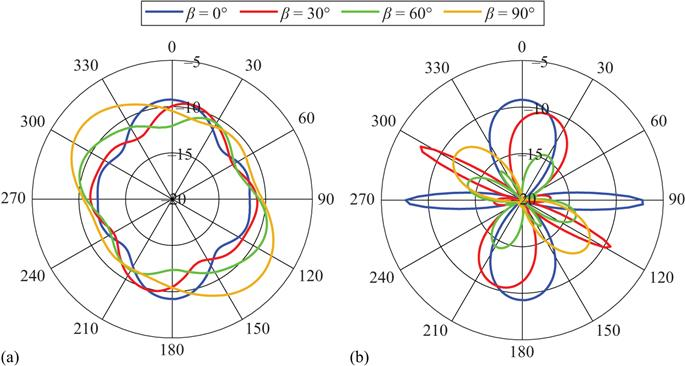
Figure 6.1 Phantom 4 BRCS (expressed in dBsm) for 570 MHz (a) and 700 MHz (b)
Table 6.3 Phantom 4 mean BRCS estimated values
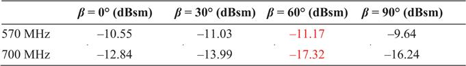
In [31], three RCS frequency regions are defined in terms of target physical dimensions (dimtarget) and radar wavelength (λ): Rayleigh region (
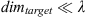
), resonance region (dimtarget ≈ λ) and optical region (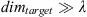
). For fc = 570 MHz, results show that the Phantom 4 drone BRCS varies smoothly with the azimuth incident angle or the bistatic angle (Figure 6.1(a)), a behaviour similar to that observed for a point source, which is expected in the Rayleigh region of the BRCS. At fc = 700 MHz, the BRCS approaches the resonance region and higher fluctuations are observed (Figure 6.1(b)). For coverage studies, the lower estimated BRCSs for each fc are selected (in red in Table 6.3).6.2.2.2 Coverage estimations
The combination of the path propagation losses estimated, including the terrain relief, the target BRCS estimation and the system sensitivity calculation, allows the generation of the estimated coverage maps using (6.2). To analyse the effects of path losses and evaluate the methodology proposed based on electromagnetic simulations, the Cassini oval is also calculated using (6.1) considering only free-space propagation losses.
As a general case, system sensitivity was estimated assuming a Swerling I target model, desired PD = 80% and PFA = 10−5, and the acquisition components of a DVB-T-based PR system such as the IDEPAR demonstrator developed by the University of Alcalá [32]. Smin = −139.55 dBm and Smin = −142.56 dBm were calculated for Tint = 250 ms and 500 ms, respectively.
To perform the coverage estimations in as realistic conditions as possible, a similar scenario to those real ones used in the following sections is considered: a rural scenario located in the South-East of Madrid, Spain, where the PR is deployed in an inland valley with small terrain obstacles. A DVB-T transmitter located at 16.6 km far from the PR and with an Equivalent Radiated Power (ERP) of 20 kW per DVB-T channel is assumed as IoO.
Coverage maps are calculated for the experimental parameters detailed in Table 6.2: fc ∈ {570, 700} MHz, Tint ∈ {250, 500} ms, B ∈ {8, 24} MHz and two target altitudes, 10 m and 50 m, with respect to the local topographic altitude. For saving space, examples of the estimated coverage maps for fc = 570 MHz and fc = 700 MHz are depicted in Figures 6.2 and 6.3, respectively, for Tint = 250 ms and B = 8 MHz. The coverages for the two methodologies and target altitudes overlap: the largest coverage area includes the smaller ones. The use of the relief information in the estimation process produces irregular coverage areas, with the presence of distant isolated covered regions. Taking into account these coverage maps, range coverages are estimated as the distance between the PR and the furthest coverage point along the broadside direction of the surveillance antenna (150°N in the considered scenario), guaranteeing a continuous coverage without isolated areas. Examples of the range coverage estimation are presented in the zoomed area on the bottom left corner of Figures 6.2 and 6.3.
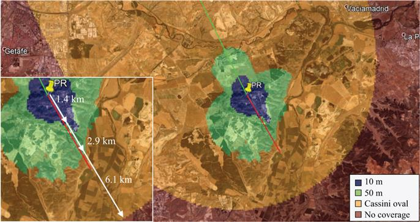
Figure 6.2 Coverage results for a Phantom 4 drone. Tint = 250 ms, B = 8 MHz, fc = 570 MHz. Red line: broadside direction. Green line: baseline
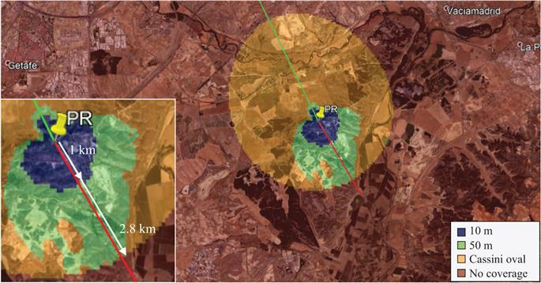
Figure 6.3 Coverage results for a Phantom 4 drone. Tint = 250 ms, B = 8 MHz, fc = 700 MHz. Red line: broadside direction. Green line: baseline
In Table 6.4, range coverage estimations obtained by the Cassini oval and the methodology based on electromagnetic simulations are summarized for the cases of Table 6.2. In the Cassini oval approach, range coverages decrease as fc increases, and largest values are obtained for higher Tint and B due to the improvement of the system sensibility and total IoO ERP, respectively.
Table 6.4 Maximum continuous estimated coverage at the PR broadside direction
| 570 MHz | 700 MHz | |||||
|---|---|---|---|---|---|---|
| Cassini | 50 m | 10 m | Cassini | 50 m | 10 m | |
| Tint = 250 ms; B = 8 MHz | 6.1 km | 2.9 km | 1.4 km | 2.8 km | 2.8 km | 1.0 km |
| Tint = 250 ms; B = 24 MHz | 9.4 km | 3.3 km | 2.2 km | 4.6 km | 2.9 km | 1.3 km |
| Tint = 500 ms; B = 8 MHz | 8.0 km | 3.1 km | 2.1 km | 3.8 km | 2.9 km | 1.2 km |
| Tint = 500 ms; B = 24 MHz | 12 km | 3.8 km | 2.3 km | 6.1 km | 3.0 km | 1.5 km |
On the other hand, the methodology based on electromagnetic simulations provides conservative coverage estimations and results close to the expected ones in a real scenario, due to it takes into account the path losses, including the terrain relief information. In this case, range coverage estimations are specific of the considered radar scenario, varying when a different geographic profile is used. As it is observed in Table 6.4, for both target flight altitudes, range coverages do not drop drastically as fc increases, and they do not improve significantly for higher Tint and B values. This fact could be related to an obstruction in the line of sight between the IoO and the target, which will reduce the received signal level. Figure 6.4 shows the difference between the received power estimated considering only free-space losses and the received power obtained taking into account the simulated path losses for a target located at 50 m altitude with respect to the local topographic altitude and fc = 700 MHz.
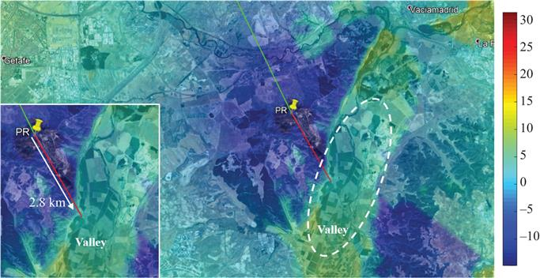
Figure 6.4 Difference (dB) between the received power estimated considering only free-space losses and the received power obtained considering simulated path losses at 700 MHz
In Figure 6.4, a valley area placed at 2.8 km far from the PR is identified, which presents higher path propagation losses and limits the improvement in the range coverage estimation. Figure 6.5 shows the non-line of sight conditions between the IoO and a target located at 2.9 km far from the PR with a flight altitude of 50 m. A high terrain obstacle close to the PR location intercepts the direct ray, causing a decrease of the received signal level due to higher diffraction losses. This fact makes insignificant the improvement expected in the range coverages for higher B and/or Tint values and lower fc (Table 6.4, 50 m column). A similar performance is observed for a target with a flight altitude of 10 m with respect to the local topographic one (Table 6.4, 10 m column). In this case, the direct ray is obstructed by the terrain obstacle at a lower distance from the PR.
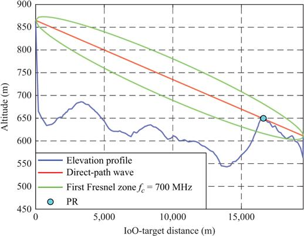
Figure 6.5 Analysis of the terrain profile and the line-of-sight conditions in the considered radar scenario. The target is located at 2.9 km from the IoO with an altitude of 50 m with respect to the topographic altitude
The results presented in this section show the dependence of the coverage maps and range coverage estimations on the radar scenario, signal processing parameters and selected target. These results also confirm the impact of the relief information in the coverage estimation process, validating the proposed methodology based on electromagnetic simulators combined with BRCS estimations and system sensitivity calculations.
6.3 DVB-T-based PR processing scheme and the disturbance cancellation stage
6.3.1 DVB-T-based PR processing scheme
The potential of a DVB-T-based PR has been widely demonstrated for both air traffic control and coastal/maritime surveillance applications [33–41]. However, differently from aircraft and vessels, drones are characterized by very small RCS values, being mostly made of non-metallic materials and by unpredictable and complex kinematics. Moreover, since they usually fly at low altitudes, their echoes might be masked by natural or man-made elements embedded in the scenarios of interest (e.g. top of trees and buildings). All these characteristics make drone detection a challenging task for any radar system. Therefore, each stage of the DVB-T-based processing scheme should be properly adapted to be effective in the considered drone surveillance application.
Figure 6.6 sketches the employed DVB-T-based processing scheme for target detection and localization, while the main required processing stages are briefly illustrated in the following.
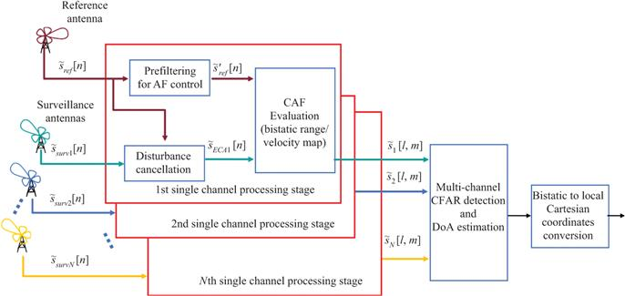
Figure 6.6 Block diagram of the DVB-T-based PR processing scheme
For the sake of generality, we refer to the case of a PR equipped with multiple surveillance channels, which collect the signals  surv n (n = 1,…,N) from an array of N antennas. The passive receiver also features a reference channel to acquire the signal
surv n (n = 1,…,N) from an array of N antennas. The passive receiver also features a reference channel to acquire the signal  ref transmitted by the IoO; alternative implementations might be based on the reference signal reconstruction from the surveillance signals according to a demodulation/remodulation approach.
ref transmitted by the IoO; alternative implementations might be based on the reference signal reconstruction from the surveillance signals according to a demodulation/remodulation approach.
We assume that the whole acquisition time (Tadq) is fragmented into CPIs of duration Tint seconds. The total number of CPIs and the distance between consecutive CPIs are defined by a selected update time (Tupd). Both Tupd and Tint are carefully selected for a specific PR application taking into account the desired resolutions, expected targets’ dynamics and the processing techniques to be applied.
According to a basic PR processing scheme, at each CPI, the signal collected at the reference channel is first used to remove undesired contributions in the signals collected at the surveillance channels (i.e. direct signal, clutter and multipath echoes). As it is well known, the disturbance cancellation represents one of the key stages within a conventional PR processing scheme since the strong stationary contributions could mask the weak targets and, consequently, degrade the target detection performance of the system. It should be noted that such undesired contributions cannot be removed by applying conventional Moving Target Indicator (MTI) techniques. A standard canceller is based on subtracting two or more consecutive echoes, with the idea that the echo from stationary targets in two consecutive echoes would be exactly the same and the difference will cancel the undesired contributions from the stationary background. In PR, two successive batches of the received signals are different even if they have been reflected by the same stationary background, since the transmitted waveform changes continuously. Hence, proper signal-dependent disturbance cancellation approaches have been designed to guarantee an effective clutter removal. Among them, we resort here to the sliding version of the Extensive Cancellation Algorithm (ECA-S) [42,43]. In particular, as demonstrated in [43,44], the ECA-S makes the system more robust to the time-varying characteristics of the environment with respect to the conventional ECA. In addition, it allows a better trade-off between disturbance cancellation and the capability to preserve low-Doppler target echoes, thus improving the detection performance of the resulting PR system.
The ECA operates by subtracting from the generic surveillance signal  surv q (t), delayed replicas of the reference signal
surv q (t), delayed replicas of the reference signal  ref(t) properly weighted according to adaptively estimated coefficients [35]. Assuming that the multipath and clutter echoes are backscattered from the first K range bins, and the received signals are sampled with sampling frequency fs, for each receiving channel the output of ECA is evaluated as
ref(t) properly weighted according to adaptively estimated coefficients [35]. Assuming that the multipath and clutter echoes are backscattered from the first K range bins, and the received signals are sampled with sampling frequency fs, for each receiving channel the output of ECA is evaluated as
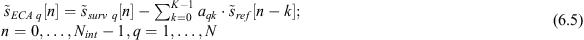
where Nint = Tint·fs is the number of samples within the CPI, being fs (Hz) the sampling frequency. The filter coefficients αq = [αq0 αq1αq(K−1)]T are evaluated by resorting to a least square approach that minimizes the power of the signal at the output of the filter:
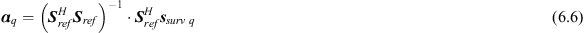
where ssurv q is an Nint×1 vector containing Nint samples of the qth surveillance signal and Sref is an Nint×K matrix, columns of which are the delayed versions of the reference signal.
In its original version, the ECA requires the filter weights to be estimated by averaging over the whole CPI. In contrast, the batch version (ECA-B) estimates and applies the filter weights over smaller portions (batches) of the integration time. Thus, ECA-B makes the system more robust to the time-varying characteristics of the environment. However, as reported in [43], it yields some limitations in the presence of slowly moving targets or targets moving mainly along the cross-range direction. To overcome the previous limitations, we adopt the ECA-S approach which operates over partially overlapped signal fragments [43]. Specifically, the ECA-S output at the pth fragment of duration TS is written as
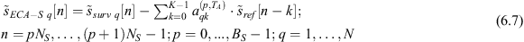
where NS is the dimension of each fragment (i.e. NS = TS·fs), BS = [Nint/NS] is the number of consecutive fragments in the CPI, and
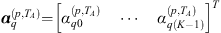
are the current filter coefficients. The latter are adaptively estimated on a longer signal fragment of duration TA = NA/fs, symmetrically taken around the current signal fragment to be processed. Basically,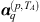
are evaluated as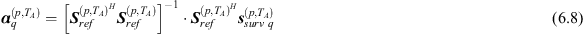
where
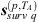
is the (NA×1) surveillance vector at the qth channel and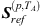
is an NA×K matrix collecting the delayed copies of the corresponding reference signal fragment of duration TA.As illustrated in [43], the batch duration TA is selected to obtain remarkable cancellation performance while preserving targets moving at the minimum Doppler of interest (notch Doppler extension Δfn = 1/TA). In contrast, TS is selected in order to move the undesired structures that arise from the batch processing of the received signals (TS<(fDmax+1/(2TA))−1), out of the Doppler range of interest (fDmax).
Based on the previous considerations, aiming at the detection of slowly moving objects with low RCS, longer batches are to be preferred to yield a narrower cancellation notch, thus preserving the target echo.
After the cancellation stage, the output signals from ECA-S filter are processed with a properly mismatched reference signal,
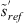
[45], to evaluate the bistatic range/velocity Cross Ambiguity Function (CAF):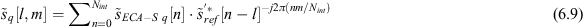
where l is the time bin associated with a delay τl = l/fs and a relative bistatic range r1 = cl/fs, and m is the Doppler shift corresponding to fm = fs(m/Nint) and a bistatic velocity vm = (mfs/Nint)(c/fc) being c the speed of light and fc the carrier frequency. Specifically, to evaluate (6.9), the correlation-FFT technique is employed as it represents the most efficient solution for the considered application [7].
As previously mentioned, the reference signal is properly filtered before it is employed for CAF evaluation. Such filtering stage is intended to remove the high side lobes and spurious peaks appearing in the DVB-T signal ambiguity function. To this purpose, we resort to the approach presented in [45] which is based on the cascade of two filters, namely the pilot signals equalization and the Residual Peaks Removal to remove the zero-Doppler peaks. It is worth noticing that both filters are not strictly necessary in the short-range case since the spurious peaks appear outside the observed range/velocity region. Nevertheless, their application guarantees that the surveillance range/velocity area observed in short-range applications is not affected by undesired side lobe structures arising from the presence of strong targets outside that area. To reduce further the computational load, suboptimum techniques can be used to evaluate the CAF with limited SNR loss [7,46,47].
Once the CAF has been evaluated at all the available surveillance channels, the output maps are jointly exploited for both target detection and its Direction of Arrival (DoA) estimation. Specifically, target detection can be sought according to different, centralized or decentralized, approaches. As per a centralized strategy, target detection is performed in the beam space after an appropriate, potentially adaptive, beamforming based on the available spatial channels. In contrast, a simple decentralized strategy can be adopted by separately applying a conventional Cell Average–Constant False Alarm Rate (CA-CFAR) threshold to each intensity map and then combining the binary outputs according to an M-out-of-N criterion. Obviously, in that case, the detection threshold at each channel should be properly adjusted to guarantee the desired global PFA. Once the target has been detected and its bistatic range and DoA have been estimated, its coordinates are converted into local Cartesian coordinates.
6.3.2 Experimental results and impact of the cancellation stage on the drone detection performance
To show the capability of a DVB-T-based PR in counter-drone operations, we report the results of experimental tests carried on in cooperation with the colleagues of Leonardo SpA.
The acquisition geometry is sketched in Figure 6.7. The DVB-T transmitter of Monte Cavo (22.5 km away) was exploited as IoO, while the DVB-T-based PR receiver was installed close to the runway of the military airport of Pratica di Mare (Italy) (see the enlarged view of the local geometry on the bottom left corner of Figure 6.7). Two or three Yagi–Uda surveillance antennas were employed during the performed tests, each one with a main beamwidth of 36°. They were displaced in the horizontal plane according to different layouts. Specifically, the tests with two surveillance channels exploited two receiving antennas mounted at distance d = 0.63 m, whereas when three surveillance channels were deployed, they were connected to a three-elements Non-Uniform Linear Array (NULA) with inter-element distances between the antennas equal to 0.63 and 0.95 m, respectively.
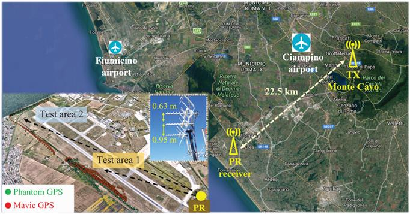
Figure 6.7 Sketch of the acquisition geometry for the test campaigns in the military airport of Pratica di Mare Airport. © 2020 IET. After [20]
We focus on three data sets, each composed of sequential data files (namely CPIs). The number of processed CPIs, the temporal duration of each CPI (Tint) and the total acquisition time (Tadq) of each data set are synthesized in Table 6.5. One or two DVB-T frequency channels have been simultaneously collected at carrier frequency F0 = 570 MHz and F1 = 754 MHz, both emitted by the same transmitter. Table 6.5 reports the selected DVB-T channels for each data set.
Table 6.5 Details of the data sets collected during the performed test campaigns
| Data set | No. of drones | No. of CPIs | CPI duration, Tint (s) | Update time, Tupd (s) | Acquisition duration, Tadq (min) | Carrier Freq. (MHz) | No. of surv antennas | Test area [min–max] distance |
|---|---|---|---|---|---|---|---|---|
| 1 | 2 | 107 | 0.5 | 4.25 | ≈8 | F0 = 570 F1 = 754 | 3 | 1 [0.85–1.79] km |
| 2 | 2 | 195 | 1 | 5.3 | ≈17 | F0 = 570 F1 = 754 | 3 | 2 [2.15–3.18] km |
| 3 | 1 (Phant.) | 147 | 0.5 | 2.75 | ≈7 | F0 = 570 | 2 | 1 [1.45–1.93] km |
During the test campaigns, one or two very small drones were employed as cooperative targets (see Figure 6.8) flying in the surrounding area of the airport. They were a DJI Phantom 4 Pro of size approx. 25 cm×25 cm (propellers excluded) and a DJI Mavic Pro of size approx. 20-cm long and 8.3-cm wide (propellers excluded). In the test campaigns, both drones were equipped with a GPS receiver to record their position. In Figure 6.7, the green and red plots represent the GPS trajectories of the Phantom and the Mavic during the collected data sets, respectively.
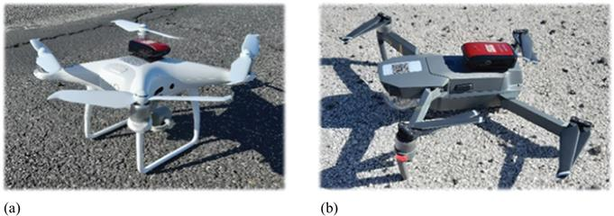
Figure 6.8 Picture of the drones used as cooperative targets: DJI Phantom 4 Pro (a); DJI Mavic Pro (b)
Two different test areas have been considered for the counter-drone application. The centre of the first area is ideally located at a distance of about 1.7 km away from the RX (Test area 1 in Figure 6.7), and the two drones flew along various paths reaching a minimum distance of 0.85 km up to a maximum distance of 1.93 km from the RX site. In the second case, the small flying objects flew up to the allowed boundaries of the airport area, yielding a maximum distance from the RX of approximately 3 km (Test area 2 in Figure 6.7). In all cases, the surveillance antennas were appropriately pointed to include the small flying objects in the main beam. Table 6.5 details the considered test area of each data set as well as the employed drones and the number of surveillance antennas exploited.
All the available data files have been first processed according to the processing scheme of Figure 6.6. Due to the low velocity and accelerations of the targets of interest, the adopted Tint values (i.e. Tint = 0.5 s for Data sets 1 and 3 and Tint = 1 s for Data set 2) allowed the desired coverage without experiencing severe migration in both range and Doppler dimension.
First, we show the impact of the disturbance cancellation stage on drone targets characterized by small RCS and low-Doppler values. To this purpose, all the available data files have been first processed according to different ECA versions over a range of 6 km. The conventional ECA requires the filter weights to be estimated by averaging over the whole CPI, namely Tint. Instead, the ECA-S operates with TB = 0.2 s (i.e. ∆fn = 5 Hz) and, since the maximum observed velocity can be limited at 50 m/s, we obtain that TS = 5.2 and TS = 3.9 ms for F0 = 570 MHz and F1 = 754 MHz, respectively.
As an example, Figure 6.9 shows the range–velocity maps obtained for a single CPI from Data set 2 when different cancellation algorithms are applied. Specifically, based on the availability of GPS information, we report an enlarged view of the maps around the targets of interest. We observe that at the time of the selected CPI, both drones were flying in the monitored area with a bistatic range greater than 4 km and opposite bistatic velocities (see the red and green GPS trajectories). All the reported maps have been scaled for the average background level (both clutter residuals and thermal noise) so that each value represents the estimated Signal-to-Disturbance Ratio (SDR). Figure 6.9(a) shows the range–velocity maps obtained in the absence of disturbance cancellation. As it is evident, a strong contribution corresponding to the direct signal and multipath/clutter echoes is present along the zero velocity. Consequently, both drones are completely masked. Using the ECA for the disturbance removal (Figure 6.9(b)), two high peaks with SDR values of 25.1 and 23.46 dB are clearly visible around the Mavic and Phantom GPS tracks, respectively. However, disturbance residuals are observed around the zero velocity since the stationary contribution is not perfectly removed. Resorting to the tailored ECA-S approach (Figure 6.9(c)), both drone peaks are visible and meanwhile, all the disturbance echoes have been effectively removed, thus showing a better cancellation capability compared to ECA. As expected, the choice of the ECA-S approach together with a proper selection of the relevant parameters yields a better cancellation of the stationary contributions, thus improving the drone detection performance of the resulting PR system.
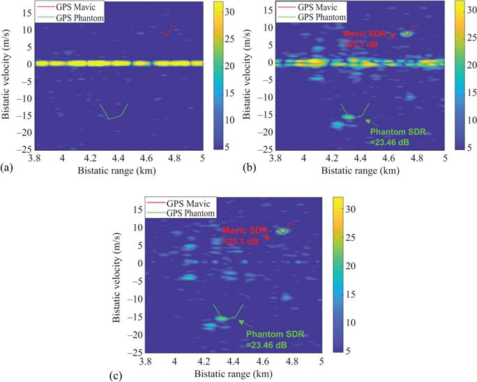
Figure 6.9 Data set 2 – short-range case: enlarged view of the bistatic range–velocity maps obtained at a single CPI using different cancellation techniques: (a) no disturbance cancellation; (b) ECA; (c) ECA-S
By observing Figure 6.9(b) and (c), we notice that in both figures, many other peaks appear. These can be caused by undesired contributions, such as side lobes of the ambiguity function, disturbance residuals as well as other noise sources, or they can correspond to other targets moving in the considered area. All the peaks are equally treated but, as these maps undergo the CFAR detection stage, only the highest peaks will exceed the threshold, thus yielding a raw detection. Due to the high-density scenario and aiming at reducing the number of false alarms, we operate in the following with a final PFA = 10−7.
The detection results obtained for the three tests are shown in Figures 6.10–6.12. In all cases, for a direct comparison, we employed just two of the available surveillance antennas. In each figure, sub-figure (a) illustrates the detection results in the bistatic range–Doppler domain. They are obtained by exploiting a decentralized integration approach among the two surveillance channels: specifically, a CFAR detection threshold is separately applied at each channel, and a 2-out-of-2 strategy is then adopted to integrate the binary outputs, being all the parameters set in order to obtain a final PFA = 10−7. Sub-figure (b) reports the results of the targets’ localization in Cartesian coordinates obtained using the two employed surveillance antennas. Grey dots have been employed to plot the raw detection results from the PR obtained across 50 consecutive CPIs, while we report in red and green the Mavic and Phantom GPS trajectories, respectively. Eventually, red and green plots are employed to plot the correct target detections, namely the detections associated with the Mavic and Phantom GPS, respectively.
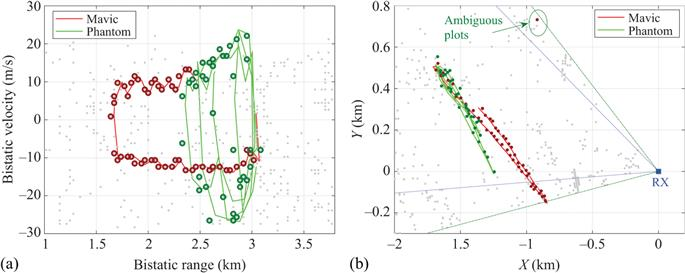
Figure 6.10 Results for Data set 1: (a) detections in the range–Doppler plane; (b) localization in Cartesian coordinates. © 2020 IET. After [20]
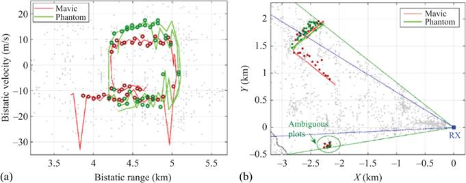
Figure 6.11 Results for Data set 2: (a) detections in the range–Doppler plane; (b) localization in Cartesian coordinates. © 2020 IET. After [20]
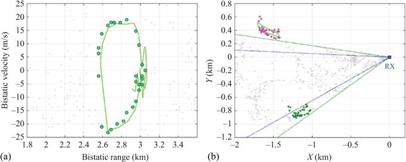
Figure 6.12 Results for Data set 3: (a) detections in the range–Doppler plane; (b) localization in Cartesian coordinates. © 2020 IET. After [20]
First of all, we observe that both drones are continuously detected along their trajectories from a minimum distance of 1.6 km up to a maximum distance of 5 km bistatic range (which corresponds to RR≃3.2 and RT≃25.1 km) across the different tests performed (see Figures 6.10(a)–6.12(a)). This is indeed a remarkable result and successfully demonstrates the sensitivity of the employed system and the effectiveness of the adopted signal processing strategies.
When the drones flew at a shorter distance from the receiver, both targets were detected with a notable continuity along the acquisition time (see Figure 6.10(a)). The corresponding localization results in Figure 6.10(b) show that the system is also able to localize both targets with high accuracy. However, an ambiguous plot is observed for the Mavic drone as highlighted by the green circle. For the considered DVB-T channel at carrier frequency 570 MHz, when two surveillance antennas at distance d = 0.63 m are employed, the target DoA is estimated unambiguously only in an angular sector equal to 49.34° (green dotted lines in Figure 6.10(b)). Notice that the obtained unambiguous angular sector is slightly larger than the antenna main beamwidth of approx. 36° (blue dotted lines in Figure 6.10(b)). Consequently, the target flying just outside the unambiguous sector is likely to be detected but the corresponding plots are miss-localized in the Cartesian domain.
As the drone’s distances increase (Data set 2), we observe some missed detections (see Figure 6.11(a)) and a less accurate localization capability is obtained (Figure 6.11(b)). This is because the target SNR decreases, thus yielding a degraded DoA estimation accuracy. This, in turn, determines higher positioning errors as the small objects move away from the receiver position. In addition, a large number of ambiguous plots are observed for the considered cases. This effect gets worse when Data set 3 is considered (see Figure 6.12). In the reported test, the Phantom flew totally outside of the surveillance antenna main beam. This demonstrates that the small target can still be detected with a good continuity, although its reflections impinge on the side lobes of the surveillance antennas. However, as the drone location falls outside the unambiguous angular sector, the passive plots are totally miss-localized (see the green plots in Figure 6.12(b)). For illustrative purpose only, by properly compensating for the a priori knew target DoA ambiguity error, the drone is correctly localized, as shown by the magenta plots in Figure 6.12(b).
Apparently, the effect of the angular ambiguity potentially applies to other plots provided by the PR sensor, i.e. to all the detections resulting from targets laying outside the unambiguous sector. Also, all the false alarms are projected into the Cartesian domain within the same region. This results in a dense distribution of plots within a small angular sector which might jeopardize the subsequent tracking stage. We observe that in order to widen the unambiguous sector, the surveillance antennas should be mounted at a shorter distance but this would yield degraded localization capability if a few antenna elements are exploited. In Section 6.5.2, we devise appropriate techniques aiming at further enhancing the performance of the system both in terms of target detection and localization. Specifically, a proper strategy is proposed to mitigate the effect of ambiguous DoA estimation while guaranteeing remarkable accuracy for targets within the antenna main lobe.
Before concluding this section, Table 6.6 investigates the impact of the disturbance cancellation stage on the obtained performance against drone targets. Specifically, Table 6.6 compares the estimated detection rate over the available 50 CPIs obtained when the cancellation stage is not applied, when a conventional ECA is adopted and when exploiting the suggested ECA-S approach for the same case studies of Figures 6.10(a)–6.12(a). The results clearly show that the disturbance cancellation stage is an essential block for the detection of such targets. We observe that the use of ECA and ECA-S allows a significant enhancement in target detection compared to the case of no disturbance cancellation. Moreover, the ECA-S yields a further improvement over the conventional ECA since it has been shown to be more robust to the time-varying characteristics of the disturbance [43,44]. As expected, the advantage of ECA-S becomes more evident when lower SNR targets are considered. This is the case of Data set 3 (the Phantom flew totally outside of the surveillance antenna main beam) where the ECA-S yields an increase of the number of correct detections of about 25% with respect to the conventional ECA.
Table 6.6 Comparison of the detection results obtained for the case studies of Figures 6.10(a)–6.12(a) with different cancellation strategies
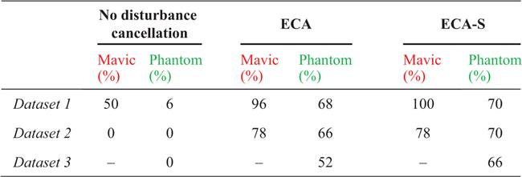
6.4 Neyman–Pearson detector approximation and clutter modelling
In radar applications, the most extended detector criterion is the Neyman Pearson one, which maximizes the PD maintaining the PFA lower than or equal to a given value [48,49]. If  is the complex value observation vector, and
is the complex value observation vector, and
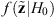
and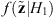
are the likelihood functions under null and alternative hypotheses, respectively, a possible implementation of the NP detector consists in comparing the Likelihood Ratio (LR),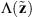
, to a detection threshold selected according to PFA requirements, ηlr(PFA), as is expressed in the following [49]: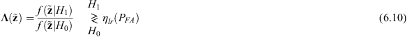
This approach requires complete knowledge of the likelihood functions, and significant detection losses appear when the statistical characteristics of the observation vector under both or any of the hypotheses differ from those assumed in the LR detector design [50]. Because of that clutter characterization is a key issue in radar-detection research activities for the formulation of the NP optimum detector, and the design of suboptimum approaches to approximate it.
In the following sections, clutter models described in radar literature to characterize the null hypothesis are reviewed, the statistical analysis techniques used to propose theoretical statistical models fitting real data are presented, and the LR detector based on clutter characterization is formulated.
6.4.1 Radar clutter characterization
In real radar scenarios, clutter signals present temporal and spatial variability in their statistical model and the associated parameters. Although clutter statistics can be characterized by environment radar measurements, this is a very complex task in bistatic geometries. In open radar literature, not much information about statistical models for bistatic clutter is accessible due to the limited number of operating systems and the multiple parameters to consider. They were mainly performed at typical radar frequencies, and the results cannot be easily extrapolated to communication systems frequencies usually exploited by PRs [51].
In this section, the study of the statistical properties of clutter and its dependences on the environment and system geometry is carried out for DVB-T-based PRs. The proposed statistical models will be key results for the formulation of the LR detector to improve the detection capabilities of PRs for drone monitoring.
6.4.1.1 Clutter modelling
The Gaussian model is applicable when the echo from each resolution cell can be modelled as that from a number of independent, random scatterers, with no one individual scatterer producing an echo of a magnitude commensurate with the resultant echo from all scatterers [52]. Under small grazing angle conditions, as the radar resolution increases, it is capable of discovering the non-homogeneity of the surface, making the Gaussian model unsuitable [52,53].
In [51], a wide set of theoretical models was considered for characterizing a complex random variable,
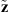
: exponential, Weibull, K-distribution, log-normal, gamma and gamma mixture distribution for the intensity (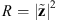
); normal, logistic and Gaussian Mixture Distribution for the in-phase (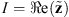
) and in-quadrature (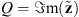
) components.Statistical analysis is based on the estimation of the Probability Density Function (PDF) and Cumulative Distribution Function (CDF), the calculation of the parameters of the considered distributions using the method of the moments and the use of goodness-of-fit tests based on the estimation of the distance between the Empirical CDF (ECDF) and the theoretical one [51].
Non-parametric tests such as the two-sample Kolmogorov–Smirnov (KS-test2) and the two-sample Cramér–von-Mises (CM-test2) are considered [51,54]. Given two identically distributed random variables, denoted as x = [x1,…,xN1] and y = [y1,…,yN2] composed of N1 and N2 independent observations, respectively, the KS-test2 and the CM-test2 are implemented as follows [51,54,55]:
- Evaluate the ECDF of both observation vectors:
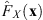
and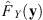
. Compute the statistic KS-distance, dKS, and CM-distance, dCM, using (6.11), where sup is the supremum of the set of distances, and H(x) is the empirical distribution function of the two samples together [54,55].
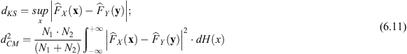
- Compare dKS and dCM with a threshold selected according to the significance level, α, and the two sample sizes, N1 and N2. If the distances exceed the thresholds, the null hypothesis will be rejected [55]. Alternatively, if the p-value is less than the chosen α, which suggests that the observed data are sufficiently inconsistent with H0, H0 should be rejected [55].
The third- and fourth-order normalized central moments, denoted as skewness and kurtosis, respectively, are usually used to check if the I and Q components are Gaussian distributed [56]. The skewness parameter, γ3, measures the degree of asymmetry of the PDF of X about its mean value μX, whereas the kurtosis parameter, γ4, analyses the non-Gaussian nature of the data. Both parameters are obtained using (6.12). For a Gaussian distribution, γ3 = 0 and γ4 = 3, so these parameters can be considered a measure of the deviation of the data from a Gaussian model.
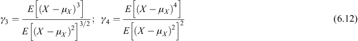
6.4.1.2 Statistical analysis of real bistatic radar clutter
The CAF is based on the matched filter implementation and, although it is not optimum for detection when clutter is present, it is frequently used as the observation space for the detection stage for several reasons [57]: it is simpler than the optimum receiver; clutter scattering function may be unknown, it can work almost as well as the optimum receiver in many situations, and it operates as Maximum Likelihood Estimator of the complex amplitude, delay and Doppler shift of the desired targets and the clutter. Taking into account these assumptions, the observation vector  in (6.10) is composed of a single complex sample of the CAF output,
in (6.10) is composed of a single complex sample of the CAF output,
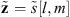
, and an exhaustive statistical analysis is carried out throughout all the CAF space.A local study of different CAF regions is performed. The CAF is split into different Doppler regions following a criterion based on CAF mean level estimation and possible targets Doppler shifts: areas where aircrafts flying at low altitudes could be detected, areas where terrestrial vehicles are expected, and the area close to the zero-Doppler shift, where ground clutter highest contributions are concentrated and drones could be flying. In the region centred in the zero-Doppler line, an exhaustive analysis is performed dividing it into different sub-regions. The Doppler shift values associated with each area depend on the PR geometry and the selected radar scenario.
In [51], ground clutter characterization in PR scenarios at UHF frequencies was carried out to provide deeper knowledge about the impact of ground clutter components on the detection of targets with low Doppler shifts. The data set analysed in [51] was acquired by the IDEPAR demonstrator, a multichannel DVB-T-based PR developed by the University of Alcalá [32]. A rural scenario with similar characteristics considered in this chapter was selected. In the considered case study, a directive antenna was used in the surveillance channel, which was processed without applying any pre-processing stage that could alter clutter statistics. Two integration time values Tint ∈ {250, 500} ms were analysed for evaluating the impact of system Doppler resolution in clutter characterization.
Results proved that a Gaussian clutter model could be assumed for higher Doppler shifts, justifying the suitability of conventional detection solutions used in radar literature for aeroplanes and ground targets with high velocity. The statistical parameters were similar for the different regions and depend on the selected Tint. For Doppler areas centred in the zero line, a non-homogeneous characterization was required: mixtures of gammas and Gaussians were proposed for modelling the intensity and I/Q components, respectively, statistics of which depend on the Tint. A higher number of mixture components are required for the zero Doppler line. This characterization allowed the improvement of detection performance for drones and ground vehicles with low Doppler shift [51,58].
The effects on the ground clutter characterization of one of the most extended PR architecture based on ECA pre-processing stage is analysed in [59] for Tint = 250 ms. This solution assumes that most of the interference components are rejected by the adaptive filter, so CFAR detectors designed for Gaussian clutter residuals are usually considered. However, in [59], a non-homogeneous characterization based on compound models was required for Doppler shifts close to zero, where ground clutter residuals concentrate. These results proved that although the ECA filter solution provides an improvement in the PR detection capabilities, it does not remove the non-homogeneity of the clutter. In the non-homogeneous area, the CFAR detectors based on Gaussian statistics are not optimum, decreasing the PR performance for the detection of targets characterized by low Doppler shifts on the CAF, such as drones.
6.4.2 Likelihood Ratio detector formulation
For the formulation of the LR detector, the knowledge of the likelihood functions of the complex observation vector is required. Clutter characterization studies in PR scenarios at UHF frequencies were presented in [17,51,58–60] and summarized in Section 6.4.1.2.
In the case study, the complex observation vector was composed of a single complex sample,
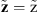
, so the joint PDF of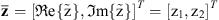
under both hypotheses must be estimated, where T denotes the transpose operation. Taking into account the statistical characterization summarized in Section 6.4.1.2, the LR detector could be formulated as follows [51]:- Gaussian areas: I and Q components are Gaussians and independent, so the likelihood function of
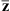
can be expressed as the product of its marginal. Under this assumption, the LR implementation consists in comparing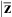
|2 with a detection threshold selected according to PFA requirements [57]. Non-Gaussian areas: I and Q components of the non-Gaussian areas could be modelled using a mixture of Gaussian distributions. In this case, both components were orthogonal, but we could not assume that they were independent, so the knowledge of the joint PDFs is required. The Expectation–Maximization algorithm was used for estimating their joint distributions as mixtures of 2D Gaussians [61]. The likelihood function for Ngauss mixture of Gaussians is detailed in (6.13), where
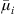
and Ci are the mean vector and the covariance matrix of the ith component, respectively, |Ci| denotes the determinant of Ci, and ki are the mixture coefficients (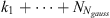
= 1) [51].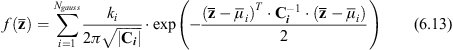
For obtaining
 , a Gaussian target model with Gaussians I and Q components of zero mean and variance was assumed. To calculate , the target covariance matrix (, being I the 2D identity matrix) is added to the covariance matrices of the individual components of the H0 mixture. The parameter could be estimated as a function of the Signal-to-Interference Ratio (SIR) and the total mean vector and covariance matrix of , which are expressed in (6.14), being tr(Ctotal) the trace of Ctotal.
, a Gaussian target model with Gaussians I and Q components of zero mean and variance was assumed. To calculate , the target covariance matrix (, being I the 2D identity matrix) is added to the covariance matrices of the individual components of the H0 mixture. The parameter could be estimated as a function of the Signal-to-Interference Ratio (SIR) and the total mean vector and covariance matrix of , which are expressed in (6.14), being tr(Ctotal) the trace of Ctotal.
The LR detector for Ngauss mixture of Gaussians is implemented using (6.15), where ηlr is the detection threshold fixed according to PFA requirements [51].
Non-Gaussian areas of the CAF require the implementation of a bank of LR detectors, but due to the formulation in terms of Gaussian mixtures, their implementation and adaptation to potential clutter changes is really easy.
6.4.2.1 Experimentation and validation
The detection capabilities of the LR detector based on clutter characterization are evaluated in a real radar scenario. The IDEPAR demonstrator [32] was deployed in a rural scenario located in the facilities of the Spanish National Institute of Aerospace Technology in ‘La Marañosa’, ITM (Madrid, Spain), where controlled drone’s flights were performed. The measurement campaign was carried out during the trials of the CONDOR project promoted by the Spanish Ministry of Defence for the evaluation of anti-drone systems. A cooperative DJI Phantom 4 drone with a GPS device was flown following trajectories defined for the military trials.
In the measurement campaign, IDEPAR used a commercial Yagi–Uda antenna in both reference and surveillance channels, characterized by an azimuth beamwidth of 24° and a gain of 17 dB. In Figure 6.13, a general view of the selected radar scenario is depicted together with the PR and IoO positions, the reference and surveillance antennas, the view from the surveillance antenna (the AoI) and the target trajectory. Torrespaña transmitter, located at 16.6 km far from the PR, was selected as IoO due to its high radiated power and omnidirectional radiation pattern.
Figure 6.13 Radar scenario: IDEPAR demonstrator deployed in the INTA facilities. © 2019 IEEE. Reprinted, with permission, from Reference [17]
The demonstrator was configured to acquire data sets of 20 s with B = 25 MHz continuous bandwidth at a central frequency of 698 MHz. Only two DVB-T channels were available, giving rise to an effective bandwidth of 16 MHz. Tint = Tupd was considered to obtain non-overlapping consecutive CPIs. A value of Tint = 250 ms was used to avoid targets’ range and Doppler cell migration (Table 6.1), providing 80 CPIs. Bistatic Doppler and range resolutions of 4 Hz and 12 m, respectively, were obtained. The acquired signal was pre-processed using the ECA algorithm to reduce DPI and clutter contributions. The cooperative Phantom 4 drone followed a two-way trajectory with a minimum distance of 1.722 km and a maximum one of 1.8 km from the PR location. A desired PFA = 10−5 was selected as a detection performance requirement.
For designing the LR solution, the clutter characterization at the output of the CAF was performed. Taking into account the methodology and results detailed in Section 6.4.1, three Doppler regions and the corresponding bistatic velocities, vbistatic, were defined based on CAF magnitude mean level estimation and the targets expected in the radar scenario: areas where aircrafts flying at low altitudes could be detected (Region 1: fd ∈ [−242, −98) Hz, vbistatic ∈ (42.12; 104.01] m/s for 1A and fd ∈ (98, 242] Hz, vbistatic ∈ (−42.12; −104.01] m/s for 1B); areas where terrestrial vehicles are expected (Region 2: fd ∈ [−98, −38) Hz, vbistatic ∈ (16.33; 42.12] m/s for 2A and fd ∈ (38,98] Hz, vbistatic ∈ (−16.33, 42.12] m/s for 2B) and Region 3 where ground clutter contributions are concentrated and drones could be flying (fd ∈ [−38; 38] Hz, vbistatic ∈ [−16.33; 16.33] m/s). Region 3 was split into different Doppler sub-regions to carry out an exhaustive analysis.
Goodness-of-fit results confirm that Regions 1 and 2 are characterized by non-zero mean Gaussian clutter models, whereas a non-homogeneous characterization is required for Doppler areas close to zero. Compound models composed of mixtures of Gaussians PDFs are selected for modelling the I and Q components of the sub-regions defined in Region 3. In the zero Doppler line and the Doppler shift values close to it, 3 and 4 Gaussians are proposed to characterize the I and Q components, respectively. For the rest of Doppler sub-regions, a lower number of Gaussians is used, being 2 Gaussians enough to model the I/Q components.
The use of the ECA filter modifies the clutter statistics of the selected Doppler lines along whole Tacq, increasing the complexity and the computational cost of the proposed solution. For each CPI, a bank of LR detectors is designed using (6.15), where the likelihood functions are estimated taking into account the statistical models proposed in the clutter characterization study and their associated parameters obtained by the method of moments. Monte Carlo simulations with an estimation error lower than 10% are used for obtaining the fixed detection threshold, ηlr, for each LR detector. The proposed detection scheme is compared to a conventional solution based on a square-law envelope detector with a fixed threshold to analyse the PR detection performance for small-drone detection.
Detection results obtained using the square-law and the bank of LR detectors are presented in Figure 6.14. Plots from the 80 CPIs of the whole acquisition time are plotted with grey dots. Detections associated with the Phantom 4 drone are remarked in red. The trajectory provided by the GPS device of the drone is also represented in green line. From visual inspection, a higher number of detections associated with the cooperative target are observed for the bank of LR detectors, so an improvement in the PR detection capabilities is expected. The drone has been detected at a minimum distance of 3.4 km up to a maximum distance of 3.55 km from the PR in the bistatic range domain.
Figure 6.14 Detection results: square-law detector (a) and bank of LR detectors (b). Grey dots: detection plots from the 80 CPIs. Red dots: detection plots related to the cooperative drone. Green line: GPS data
Quantitative results based on the estimation of the PD and the PFA at the output of the detection stage are obtained following the methodology detailed in [32]. The PD is estimated at a plot level to avoid the errors associated with the pixel detection grouping techniques. A common ground truth for the cooperative target was generated using the GPS data. Monte Carlo simulation with an estimation error lower than 10% was used to estimate the PFA at a pixel level removing target contributions. For the detection scheme based on a bank of LR detectors, PFA = 1.95·10−5 and PD = 60% for the cooperative target were obtained, whereas PFA = 2.08·10−5 and PD = 42.5% values were estimated for the square-law detector. The proposed solution provides a significant detection performance improvement with respect to the conventional scheme, increasing approximately 18% the PD with a similar PFA, close to the desired one.
Finally, the tracking system described in [32] was applied at the output of the proposed detection scheme, confirming one trajectory in the radar scenario. In Figure 6.15(a), the estimated trajectory is depicted with the superimposition of the detection plots and the real trajectory provided by the GPS device. The confirmed track is composed of 70 estimated points, giving rise to a PD = 87.5% at the output of the tracking stage and increasing the PR performance.
Figure 6.15 Estimated trajectory by the PR processing stage, GPS data and detection plots (a); SIR study at the input of the detection stage (b)
Taking into account the drone motion, the trajectory could be split into three different intervals. In the first 5.25 s, the drone is moving away from the PR at an initial bistatic range of 3.45 km with a bistatic velocity of 17.9 m/s. Then, manoeuvres of deceleration and acceleration (D/A) are performed from 5.5 s to 11.5 s to change the flight direction. Finally, from 11.75 s to 20 s, the drone is approaching the PR with a bistatic velocity of −17.9 m/s.
In Figure 6.15(a), tracking losses are observed at the beginning of the trajectory due to the lack of enough detection plots during the first 2.5 s. However, the tracker is able to estimate the drone trajectory in the D/A interval with a few detected plots because the track has been already validated. These missed detections could be related to a reduction in the SIR at the input of the detection stage. In Figure 6.15(b), the SIR estimated for the [l,m] CAF cells associated with the cooperative drone for the whole acquisition time is depicted. The SIR depends on the system geometry as well as on the relative facing of the drone. Nevertheless, an SIR reduction is observed when the bistatic velocity is close to zero (D/A interval) due to the pre-processing filtering technique.
Presented results confirm that the bank of LR detectors, designed according to Doppler-shift-dependent clutter models, is suitable for drone detection and monitoring applications, outperforming the detection capabilities of the conventional solutions based on a square-law detector. These results also show the impact of a proper statistical characterization of the radar scenario, which is useful for the formulation of optimum detectors based on the NP criterion. The bank of LR detectors based in Gaussians mixtures is quite easy to implement and adapt to potential clutter changes. Because of that, the proposed solution is feasible for being implemented in operative systems.
6.5 Multi-channel signal processing strategies
6.5.1 Exploitation of array antennas for target localization
The use of an antenna array in the surveillance channel and the associated Digital Array Signal Processing (DASP) techniques could provide further benefits: generation of notches along the DoA of interferences such as the DPI or other direct signals from interfering IoOs, 3D target parameter estimation (range, Doppler, azimuth) and improvement in the target localization accuracy, angular resolution and angular coverage.
In the literature, solutions based on a two-stage spatial filtering scheme are widely used [62,63], first step of which is focussed on target detection using CFAR techniques, whereas the second one implements DoA algorithms. In this section, modified versions of the previous two-stage spatial filtering approaches proposed in radar literature are presented. Beamforming techniques based on Side Lobe Level (SLL) reduction [64] and optimum weights designed to minimize the variance of the interference using the statistical characterization of real clutter data [17] are analysed. The proposed solutions are evaluated in a real radar scenario for drone detection using DVB-T-based PRs.
6.5.1.1 Array signal processing techniques
Snapshots for array signal processing can be generated in the time domain (outputs of the analogue-to-digital converters associated with each single radiating element) or in the frequency domain (outputs of the CAF processing stage calculated for each single radiating element). If beamforming techniques are applied in the transformed domain, we could take the advantage of the integration gain, system resolution, the sparsity of the targets and interferences present in the input signal, and that each beam space will be only responsible for the azimuth discrimination [62].
In most PR scenarios, CPI is significantly greater than the propagation time across the array, and the product between B and Tint is large enough, assuming an almost flat input signal temporal spectra. Under these assumptions, the frequency-domain snapshot model is usually applied [65] and is considered in this work.
As is observed in the general DVB-T-based PR processing scheme presented in Figure 6.6, independent CAFs (i(t), i = 1,…,N) are generated for each single radiating element of the surveillance array before the DASP stage. In the CAF domain, the snapshots are obtained for each (range bin, Doppler bin) pair, (l,m): ss[l,m] = [ 1[l,m],…,
1[l,m],…,  N[l,m]]T [64].
N[l,m]]T [64].
DASP techniques allow the generation of multiple beams pointing to a set of azimuth directions, Φ = {ϕsa,1,…, ϕsa,Nϕsa}, using appropriate weight vectors, w[m, ϕsa,i]. If the array is located along y-axis, with the XY plane parallel to the tangent plane to the array location, the steering vector (a[m, ϕsa,i]) of a signal impinging from a direction ϕsa,i is defined in (6.16), where fs is the sampling frequency, fp is carrier frequency, di with i = 1,…,N is the distance of the ith antenna element relative to the origin, and c is the speed of light. The resulting signal after beamforming processing is expressed in (6.17), where superscript H represents the Hermitian conjugate operation.
Conventional data-independent beamforming algorithms were applied in two modified versions of the two-stage spatial filtering scheme presented in [62,63]. In both approaches, a two-stage spatial filtering scheme based on target detection using multiple simultaneous beams and on the estimation of the angle of arrival using DoA techniques was designed for estimating target parameters in the 3D space (range, Doppler, azimuth).
Two-stage spatial filtering processing scheme
A two-stage spatial filtering scheme based on [62,63] is considered. The proposed modifications are based on the combination of weighting techniques to control SLL and maximizing directivity, instead of uniform conventional beamforming. Both beamforming approaches were detailed in [64], and the associated performances were analysed. In Figure 6.16, the main functional blocks of the proposed method are depicted [64]:
- The first stage implements beamforming based on orthogonal beams calculated under SLL requirements (wSLL) to generate a beam space where a 3D CFAR detector is applied. The detector operates using a windowing technique that defines Cells Under Test (CUTs) related to maxima in the beam space and a 3D reference window to improve the interference statistic estimation and to reduce CFAR losses.
- The second stage corresponds to a high-resolution DoA estimation. A new set of steering angles was defined to increase azimuth estimation accuracy. The Minimum Variance Distortionless Response algorithm was considered [65], and the weight vector was calculated to maximize the directivity (wMD).
Two-stage spatial filtering processing scheme based on optimum beamforming techniques
DASP techniques based on a two-stage spatial filtering processing scheme usually apply incoherent CFAR detectors for the first stage. These solutions are optimum in the presence of independent and identically distributed samples with exponential PDF, but their performance decreases significantly under other clutter conditions. To improve conventional non-coherent detection scheme performance in non-homogeneous scenarios, beamforming techniques optimized to minimize the variance of the interference and increase the SIR are proposed to generate the beam space for the first stage of Figure 6.16 [17].
Figure 6.16 Proposed two-stage frequency-domain spatial filtering scheme [64]. © 2017 by the authors
The snapshot generated in the CAF domain, ss[l,m] = [
 1[l,m],…,
1[l,m],…,  N[l,m]]T, is composed of the target return, r[l,m], in the incoming direction ϕsa,I, plus the received clutter in each single array element, c[l,m] = [c1[l,m],…, cN[l,m]]. That is: ss[l,m] = a[m,ϕsa,i]·r[l,m]+c[l,m], being a[m,ϕsa,i] the steering vector expressed in (6.16). Assuming the distortionless criterion, the beamformer output is obtained using (6.18).
N[l,m]]T, is composed of the target return, r[l,m], in the incoming direction ϕsa,I, plus the received clutter in each single array element, c[l,m] = [c1[l,m],…, cN[l,m]]. That is: ss[l,m] = a[m,ϕsa,i]·r[l,m]+c[l,m], being a[m,ϕsa,i] the steering vector expressed in (6.16). Assuming the distortionless criterion, the beamformer output is obtained using (6.18).The mean square of the output interference is expressed in (6.19), where Mc is the interference covariance matrix. After minimizing the interference variance using Lagrange multipliers, the optimum weights are calculated using (6.20) [57].
The proposed beamforming is highly dependent on clutter statistics, so a statistical characterization of the observation space, the CAF generated for each single array element, is required. Detection and DoA stages are implemented as in the previous two-stage scheme.
6.5.1.2 Experimentation and validation
The proposed two-stage schemes are evaluated in the rural scenario presented in Section 6.4.2.1 [17]. In this measurement campaign, IDEPAR was configured with the commercial high-directivity antenna described in Section 6.4.2.1 in the reference channel, and a five-element NULA along the y-axis in the surveillance one. The single radiating element had a bandwidth of 60° and a gain of 6.9 dB. The inter-element distances were estimated using a genetic algorithm to obtain a compromise solution between side lobe level and main beamwidth [66], providing an angular resolution of 17°. IDEPAR configuration and processing parameters used in Section 6.4.2.1 were considered. In this case study, the cooperative drone was approaching the PR at an initial distance of 600 m. The five signals acquired by the NULA elements were pre-processed using the ECA algorithm to reduce DPI and clutter contributions. For each CPI and NULA element, a CAF was generated to apply the two-stage scheme:
- In the first stage, orthogonal beams were generated. Steering angles of ϕsa = [−22.4°,0°,22.4°] were selected to cover the azimuth coverage area limited by the single-antenna beamwidth (60°).
- The optimization problem formulated in [64] was solved to obtain wSLL. A clutter characterization of each array element was required to estimate wopt (6.20).
- A CA-CFAR detector with a reference window of size Rr×Rd×Ra = 64×16×3 was used, being Rr, Rd and Ra the number of range, Doppler and azimuth reference cells. The PFA was set to 10−5.
- In the second stage, a set of 361 steering angles equally spaced between −30° and 30° was generated to perform a high accuracy DoA estimation.
The statistical analysis of each array element was carried out following the strategy detailed in Section 6.4.1 and the Doppler regions defined in Section 6.4.2.1. Results confirmed that a non-homogeneous characterization was required for Doppler shifts close to zero, selecting the mixture of Gaussians for modelling the I and Q components. A Gaussian clutter model was used to characterize the higher Doppler areas. Different interference characterization was obtained for each NULA element due to multipath and DPI effects. The antenna with the higher Doppler shift interval associated with a non-homogeneous clutter was selected to determine the interference model used for calculating optimum beamforming weights. Results proved that clutter statistics depended on the array element and the Doppler shift in the CAF, so optimum beamforming weights were estimated for each Doppler region defined in the statistical analysis and each CPI of the whole acquisition time [17].
To carry out a comparative study between both DASP techniques, the SIR at the output of the first-stage beamformer was estimated for the [l,m] CAF cells associated with the cooperative drone in the whole interval. In Figure 6.17(a), an SIR improvement is observed when the optimum weights are applied, so an increase in the PR detection performance is expected. To prove the benefits of the DASP techniques, the SIR at the input of the first stage was estimated for each array element. In Figure 6.17(b), the SIRs for the best and worst cases are compared to that obtained with the optimum beamformer, showing a significant SIR increase when the DASP technique is considered.
Figure 6.17 Comparative SIR study between proposed DASP techniques (a) and at the input and output of the first stage beamformer (b). (a) © 2019 IEEE. Reprinted, with permission, from Reference [17]
In Figure 6.18(a), the superimposition of the detector outputs in the 80 CPIs is presented, displaying all the false alarms detected through all acquisition time. Two main groups of detections can be identified: one was associated with the cooperative drone using its GPS data (marked with red), and the other one was related to an unexpected terrestrial target (marked with blue).
Figure 6.18 Results of the two-stage filtering scheme based on optimum weights: superposition of the detection matrices provided by the detection stage (a) and 2D estimated trajectories in the radar scenario (b). © 2019 IEEE. Reprinted, with permission, from Reference [17]
Detection performance is evaluated through the PD and PFA estimation following the methodology detailed in [32,64]. Common ground truths were calculated for the cooperative target using the GPS data to estimate the PD, which is calculated at the plot level due to errors associated with the pixel detection grouping techniques. The PFA was estimated at pixel level removing the target contributions and using Monte Carlo simulations with an estimation error lower than 10%. For the scheme based on SLL reduction, PFA = 7.32·10−5 and PD = 97.5% for the cooperative target were obtained. PFA = 6.06·10−5 and PD = 98.75% were estimated when optimum weights are applied. Results show that the solution based on optimum weights outperforms the performance of the one designed to control SLL, providing a higher PD with a lower PFA. In both cases, the estimated PFA is higher than the desired one. A CA-CFAR detector designed assuming Gaussian clutter is applied at the output of the beamforming stage. However, the clutter statistical analysis proved that a non-homogeneous characterization is required for Doppler shifts close to zero. In this area, the CA-CFAR detector is not optimum, decreasing the PR performance.
The 3D target’s parameters obtained at the output of the two-stage filtering technique were transformed to 2D map coordinates to be depicted in the radar scenario, Figure 6.18(b). As is observed, the estimated trajectory associated with the cooperative drone fits well with the GPS, and the second one was related to a terrestrial target running in the secondary road. These results validate the proposed two-stage processing schemes and confirm the suitability of DVB-T-based PR for small-drone detection.
6.5.2 Exploitation of the frequency and spatial diversity to improve the detection and localization performance
As it is well known, target detection performance depends highly on the selected transmitter of opportunity and, in particular, it significantly varies with the employed DVB-T channel. The radiating characteristics of the transmitter and the electromagnetic conditions of the propagation channel vary across the wide frequency band allocated to the DVB-T service in the UHF band (from 470 to 862 MHz). In addition, also the target scattering can change with the different considered frequency channels. Eventually, target DoA estimation is characterized by low accuracies when operating at UHF band. Moreover, as mentioned in the previous section, when we operate with a uniform linear array, the requirements of accurate DoA estimation and wide unambiguous angular sector sets competing constraints on the array equivalent length.
To overcome the aforementioned limitations, we can take advantage of the frequency and spatial diversity allowed by the multi-frequency operation and a NULA layout. Specifically, aiming at improving the target detection capability and the reliability of the considered system, we consider the joint exploitation of multiple DVB-T channels emitted by the same broadcast illuminator of opportunity based on the detection schemes proposed in [12]. Among the different MF operation approaches, the decentralized detection scheme (MF DEC) is adopted in the following since it has been shown to be more robust to the presence of ghost targets or unwanted plots formations. Therefore, a detection is declared at a given range/velocity location when L detections out of Q available frequency channels are obtained for the considered range–Doppler bin [l0, m0] of the maps separately evaluated at each surveillance channel. Specifically, by defining bq[l0, m0] the binary map at the output of the CFAR detection stage of Figure 6.6, we obtain
In this case, a conventional CA-CFAR threshold is separately applied at each single frequency channel in order to achieve the desired PFA after the MF binary integration:
where is the probability of false alarm set at each DVB-T channel. Once the target has been detected on the range–velocity plane, the DoA of the corresponding echo has to be estimated with the purpose of localizing it in the X–Y plane. To this purpose, we take the advantage of MF operation in conjunction with a NULA layout to relax the trade-off between DoA estimation accuracy and unambiguous angular sector. In detail, we resort to an ML approach that incoherently integrates the target echoes at multiple carrier frequencies [67]. Specifically, the ML estimate of the target DoA sin( ( being the angle of arrival, measured relative to the array boresight) is obtained as
where is the N×1 vector with the complex values extracted at the range–velocity location where the target has been detected, is the noise power at the qth frequency channel, while aq(u) is the spatial target steering vector. For a linear array composed by N surveillance antennas at positions dn(n = 0,…,N−1) measured with respect to the phase reference point, aq(u) is given by (6.24), where λq is the qth wavelength, q = 1,…,Q.
This approach benefits from the increased equivalent target SNR provided by the MF integration, which yields enhanced estimation accuracy for unambiguous targets. However, along with this expected advantage, the frequency diversity and the non-uniform spacing of the receiving antenna elements allow to build up an improved ML likelihood function with reduced side lobes level. Therefore, the probability of outliers in target DoA estimation is lowered even operating with few and largely spaced antenna elements [68].
The processing scheme to be applied at each branch of the architecture in Figure 6.6 is sketched in Figure 6.19.
Figure 6.19 Multi-channel multi-frequency DVB-T-based processing scheme for target detection and localization. © 2020 IET. After [20]
We illustrate the benefits gained for the considered counter-drone operations both in terms of target detection capability and localization accuracy. Specifically, we focus on Data sets 1 and 2 detailed in Table 6.5 due to the availability of both multiple DVB-T frequency channels and surveillance antennas. The same case studies of Figures 6.10 and 6.11 are considered.
First, we consider the use of two surveillance antennas. Table 6.7 reports a quantitative comparison in terms of estimated detection rate and rate of miss-localized plots (due to DoA estimation ambiguities) when separately exploiting the two frequency channels and after the MF operation. In detail, we employ the MF decentralized detection scheme based on a 1-out-of-2 strategy (MF DEC 1/2), while the ML approach in (6.23) is considered for DoA estimation. Specifically, the maximization of (6.23) is performed over a wide angular sector equal to [−50°:0.01°:50°]. It is worth noticing that this sector is wider than the unambiguous sector that is guaranteed given the distance among the employed antennas on receive, with both the considered carrier frequencies.
Table 6.7 Data sets 1 and 2: comparison of the SF and the MF configurations (over 50 CPIs) using two and three surveillance antennas
By observing Table 6.7, we notice that the two DVB-T channels yield comparable detection results when the drones flew at a shorter distance (Data set 1). In detail, it is interesting to note that the Mavic drone is detected with a detection rate equal to 100% over the available 50 CPIs. In this case, for both drones, due to the comparable and remarkable detection performance of both single channels, we observe that the MF operation does not yield any significant improvement in terms of target detection capability with respect to the single-frequency operation. In contrast, the possibility to widen the unambiguous angular sector provided by the MF approach allows to correctly localize all plots in the Cartesian plane (see Table 6.7 and Figure 6.20(a)) even operating with two surveillance antennas.
Figure 6.20 Data set 1: localization results for 50 consecutive data files using: (a) MF DEC 1/2 with 2 surv. antennas; (b) SF F0 with 3 surv. antennas; (c) MF DEC 1/2 with 3 surv. antennas. © 2020 IET. After [20]
When the distance of the drones increases (Data set 2), we observe that the target detection capability shows a larger dependency on the employed DVB-T channel. Moreover, the best performing DVB-T channel varies with the two drones. In this case, the detection performance improvement provided by the MF approach is quite apparent as many additional plots are obtained with respect to the worst SF operation of each target. This clearly shows that the MF approach allows mitigating the temporal variability of the system performance that is typically caused by the time-varying characteristics of both the employed waveforms and the propagation channels, there, including the target scattering and its multipath. In addition, the MF solution avoids the ambiguous estimation of the DoA for targets flying outside the unambiguous angular sector provided by the SF operation. However, there is a non-zero probability that outliers could occur when two antennas are considered. In fact, in the considered test, two ambiguous plots are obtained as highlighted by the green circle in Figure 6.21(a).
Figure 6.21 Data set 2: localization results for 50 consecutive data files using: (a) MF DEC 1/2 with 2 surv. antennas; (b) SF F0 with 3 surv. antennas; (c) MF DEC 1/2 with 3 surv. antennas. © 2020 IET. After [20]
Alternatively, to increase at the same time both the DoA estimation accuracy and the unambiguous angular sector, a NULA can be used. The detection rate and rate of miss-localized plots for both DVB-T channels, for the case of three surveillance antennas, are illustrated in Table 6.7. In this case, a 3-out-of-3 strategy is adopted to integrate the detection results at the three available surveillance channels; still the relevant parameters are set in order to obtain a final PFA = 10−7. As an example, Figures 6.20(b) and 6.21(b) report the localization results using three surveillance antennas and the single frequency F0. By comparing the results obtained with two and three surveillance antennas, it is evident that in all cases the exploitation of three antennas allows to correctly localize all plots in the Cartesian plane (namely zero ambiguous plots).
Moreover, by comparing Figures 6.20(b) and 6.21(b) with Figures 6.10(b) and 6.11(b), we might notice that the use of three antennas allows more accurate localization. This is apparent especially at longer distances from the RX where a reduced DoA estimation accuracy is expected with the SF operation, which, in turn, results in a degraded localization capability due to the projection of the angular errors in the Cartesian domain.
Eventually, a further improvement in terms of localization results might be achieved by jointly exploiting multiple frequency channels and surveillance antennas (Figures 6.20(c) and 6.21(c)). In this case, when three surveillance antennas are used, the MF operation allows only a slight improvement in the localization accuracy with respect to the SF approaches. Notice that the localization improvement does not appear substantial against the considered targets since remarkable localization performance was obtained with the two single DVB-T channels.
Nevertheless, it is worth noticing that the obtained benefits also apply to other targets detected by the PR. As an example, Figure 6.22 shows the localization results of Figure 6.21(c) over the Google Earth map of the local area. As it is evident, in addition to the cooperative drones, the considered system is able to detect many other targets that are likely to correspond to vehicles or aircraft moving on the surface of the airport as well as to birds (comparable with the drones in terms of size). The possibility to widen the unambiguous angular sector greatly simplifies the discrimination among tracks in the Cartesian domain. However, the reported results clearly show that the considered system is able to continuously detect several targets that could be typically encountered in an airport scenario. Therefore, in order to make the DVB-T-based PR sensor able to distinguish among the different type of targets, proper strategies should be considered in the future.
Figure 6.22 Data set 2: localization results of Figure 6.21(c) over the Google Earth map of the local area. © 2020 IET. After [20]
6.6 Conclusions
This chapter tackles the design of DVB-T-based PR sensors and signal processing techniques aiming at enabling silent surveillance of drones in security-sensitive scenarios. Although drones can be valuable friendly collaborative tools for a wide variety of applications, they are also used as vectors of many security threats in modern societies. These are challenging targets from the radar point of view, due to their low reflectivity and high manoeuvrability. The low altitude flights take advantage of trees, ground relief and other man-made elements, to complicate their detection from the scattered energy when they are illuminated by an electromagnetic wave. In this context, PRs are considered an opportunity to enforce surveillance systems in environments where electromagnetic radiations are seriously limited, and a quick deployment and high reconfiguration capabilities are required. The multistatic nature of its operating principle, together with the possibility of using different transmitters with a wide variety of waveforms, frequencies and geometries, makes this research line of great interest.
The study starts with the estimation of expected coverages emphasizing the importance of modelling the propagation losses, including ground effects and a proper model of the BRCS of the target. Studies must be performed for different flight altitudes, specially in environments of complex relief or characterized by numerous vertical structures (urban areas), different frequencies, bandwidths and integration times, parameters that will determine the resolutions of the system and the coherent processing gain required for detection.
Two approaches are presented for the design of the PR detector. The first one focuses on the design of interference cancellation techniques before the coherent processing (CAF); the second one is based on the statistical modelling of the CAF output under hypothesis H0 and H1 to formulate the LR detector. In both cases, surveillance systems composed by a single or an array of radiating elements are considered, and different processing schemes and antenna layout are proposed and evaluated.
DASP techniques are used to increase the angular coverage and resolution and to provide the required angular information for 3D (range, Doppler, azimuth) processing. Two-stage approaches are analysed that define different beamforming approaches for detection and DoA estimation.
Also, the inherent possibility of exploiting multiple DVB-T channels emitted by the same transmitter has been explored with the aim to increase the radar range resolution, or to enhance the detection performance by making it robust with respect to the characteristics of the single propagation channel, or to improve the target localization capability by relaxing the constraints on the antenna layout related to the angular ambiguities.
The earlier approaches have been tested against experimental data collected with different PR receivers. The results clearly showed the benefits of the proposed strategies in practical applications and proved the capability of a DVB-T-based PR of detecting and localizing small drones flying at few kilometres from the receiver.
Future activities should address proper approaches aimed at equipping the sensor with the capability to distinguish between different classes of targets.
References
[1] Ritchie M., Fioranelli F., and Borrion H. ‘Micro UAV crime prevention: can we help Princess Leia?’ in Savona, B. L. (ed.). Crime Prevention in the 21st Century. New York, NY: Springer; 2017, pp. 359–376.
[2] https://www.postandcourier.com/news/report-helicopter-crash-on-danielisland-may-have-been-caused-by-drone/article_1123767a-12a7-11e8-bf2e-2798e681cd6b.html [Accessed 10 June 2020].
[3] https://www.newscientist.com/article/2190096-drones-are-causing-airportchaos-why-cant-we-stop-them/ [Accessed 10 June 2020].
[4] https://www.911security.com/blog/airport-security-drone-incident-at-gatwickairport-may-cost-tens-of-millions-of-dollars [Accessed 10 June 2020].
[5] Shi X., Yang C., Xie W., et al. ‘Anti-drone system with multiple surveillance technologies: architecture, implementation, and challenges’. IEEE Communications Magazine. 2018, 56(4), pp. 68–74.
[6] Howland P.E. ‘FM radio based bistatic radar’. IEE Proceedings – Radar, Sonar and Navigation. (Special Issue on Passive Radar System). 2005, 152(3).
[7] Lombardo P. and Colone F. ‘Advanced processing methods for passive bistatic radar systems’ in Melvin, W. L. and Scheer, J. A. (eds.). Principles of Modern Radar: Advanced Radar Techniques. Raleigh, NC SciTech Publishing; 2012, pp. 739–821.
[8] Pignol F., Colone F., and Martelli T. ‘Lagrange-polynomial-interpolation-based keystone transform for a passive radar’. IEEE Transactions on AES. 2018, 54(3), pp. 1151–1167.
[9] Filippini F., Martelli T., Colone F., et al. ‘Exploiting long coherent integration times in DVB-T based passive radar systems’. IEEE Radar Conference, Boston, MA, USA, 2019.
[10] Saini R. and Cherniakov M. ‘DTV signal ambiguity function analysis for radar application’. IEE Proceedings – Radar, Sonar and Navigation. 2005, 152(3), pp. 133–142.
[11] Palmer J.E., Harms H.A., Searle S.J., and Davis L. ‘DVB-T passive radar signal processing’. IEEE Transactions on Signal Processing. 2013, 61(8), pp. 2116–2126.
[12] Martelli T., Colone F., Tilli E., et al. ‘Multi-frequency target detection techniques for DVB-T based passive radar sensors’. Sensors. 2016, 16(10).
[13] Martelli T., Colone F., Tilli E., and Di Lallo A. ‘Maritime surveillance via multi-frequency DVB-T based passive radar’. IEEE Radar Conference (RadarConf), Seattle, WA, USA, 2017, pp. 0540–0545.
[14] Liu Y., Wan X., Tang H., et al. ‘Digital television based passive bistatic radar system for drone detection’. IEEE Radar Conference, Seattle, WA, USA, 2017, pp. 1493–1497.
[15] Poullin D. ‘Countering illegal UAV flights: passive DVB radar potentiality’. 19th International Radar Symposium (IRS), Bonn, 2018, pp. 1–10.
[16] Jarabo-Amores M.P., Mata-Moya D., Gómez-del-Hoyo P.J., et al. ‘Drone detection feasibility with passive radars’. Proceedings of the 15th European Radar Conf.; Madrid, Spain, Sep 2018, pp. 313–316.
[17] del-Rey-Maestre N., Mata-Moya D., Jarabo-Amores M.P., Gómez-del-Hoyo P.J., and Rosado-Sanz J. ‘Optimum beamforming to improve UAV’s detection using DVB-T passive radars’. IEEE International Radar Conference, Toulon, 2019.
[18] Jarabo-Amores M.P., Mata-Moya D., Gómez-del-Hoyo P.J., del-Rey-Maestre N., and Rosado-Sanz J. ‘On the impact of drone airscrews signature on passive radar detection and tracking stages’. 2020 IEEE Radar Conference (RadarConf20), Florence, Italy, 2020, pp. 1–6.
[19] Martelli T., Colone F., and Cardinali R. ‘Simultaneous short and long range surveillance of drones and aircrafts with DVB-T based Passive Radar’. IEEE International Radar Conference, Toulon, 2019.
[20] Martelli T., Colone F., and Cardinali R. ‘DVB-T based passive radar for simultaneous counter drone operations and civil air traffic surveillance’. IET Radar, Sonar & Navigation. 2020, 14(4), pp. 505–515.
[21] Martelli T., Filippini F., and Colone F. ‘Tackling the different target dynamics issues in counter drone operations using passive radar’. International Radar Conference, Washington, 2020, pp. 512–517.
[22] Willis N.J. Bistatic Radar. Raleigh, NC: SciTech Publishing; 2005.
[23] Velez M.M., Angueira P., De La Vega D., Arrinda A., and Ordiales J.L., ‘DVB-T BER measurements in the presence of adjacent channel and co-channel analogue television interference’. IEEE Transactions on Broadcasting. 2001, 47(1), pp. 80–84.
[24] Rzewuski S., Borowiec K., Kulpa K., et al. ‘Supersonic target detection in passive radar’. 16th International Radar Symposium (IRS), Dresden, 2015, pp. 89–94.
[25] WinProp Propagation Modelling: A new dimension of wave propagation and radio network planning. https://altairhyperworks.com/product/Feko/WinProp-Propagation-Modeling [Accessed March 2020].
[26] Jarvis A., Reuter H.I., Nelson A., and Guevara E. ‘Hole-filled seamless SRTM data V4’. International Centre for Tropical Agriculture (CIAT), 2008. Available from http://srtm.csi.cgiar.org [Accessed March 2020].
[27] Pisa S., Piuzzi E., Pittella E., et al. ‘Evaluating the radar cross section of the commercial IRIS drone for anti-drone passive radar source selection’. 22nd International Microwave and Radar Conference (MIKON), Poznan, 2018, pp. 699–703.
[28] Guo M., Lin Y., Sun Z., and Fu Y. ‘Research on monostatic radar cross section simulation of small unmanned aerial vehicles’. 2018 International Conference on Microwave and Millimeter Wave Technology (ICMMT), Chengdu, 2018, pp. 1–3.
[29] Speirs P.J., Schröder A., Renker M., Wellig P., and Murk A. ‘Comparisons between simulated and measured X-band signatures of quad-, hexa- and octocopters’. 2018 15th European Radar Conference (EuRAD), Madrid, 2018, pp. 325–328.
[30] ANSYS HFSS. 3D Electromagnetic Field Simulator for RF and Wireless Design. https://www.ansys.com/products/electronics/ansys-hfss [Accessed March 2020].
[31] Sevgi L. Complex Electromagnetic Problems and Numerical Simulation Approaches. Piscataway, NJ, USA: Wiley-Interscience; 2003.
[32] Jarabo-Amores M.P., Bárcena-Humanes J.L., Gómez-del-Hoyo P.J., et al. ‘IDEPAR: a multichannel digital video broadcasting-terrestrial passive radar technological demonstrator in terrestrial radar scenarios’. IET Radar, Sonar and Navigation. 2016, 11.
[33] Kulpa K., Malanowski M., Misiurewicz J., and Samczynski P. ‘Passive radar for strategic object protection’. IEEE International Conference on Microwaves, Communications, Antennas and Electronics Systems (COMCAS), 2011, pp. 1–4.
[34] Kuschel H., Ummenhofer M., Lombardo P., Colone F., and Bongioanni C. ‘Passive radar components of ARGUS 875 3D’. IEEE Aerospace and Electronic Systems Magazine. 2014, 29(3), pp. 15–25.
[35] Kuschel H., Heckenbach J., O’Hagan D., et al. ‘A hybrid multi-frequency Passive Radar concept for medium range air surveillance’. Microwaves, Radar and Remote Sensing Symposium, Kiev, 2011, pp. 275–279.
[36] Poullin D. and Flecheux M. ‘Passive 3D tracking of low altitude targets using DVB (SFN Broadcasters)’. IEEE Aerospace and Electronic Systems Magazine. 2012, 27(11), pp. 36–41.
[37] Poullin D. and M. Flécheux. ‘A multistatic 3D passive system based on DVB-T’. International Radar Conference, Lille, 2014, pp. 1–6.
[38] O’Hagan D.W., Capria A., Petri D., et al. ‘Passive bistatic radar (PBR) for harbour protection applications’. Proc. of the IEEE National Radar Conference, Atlanta, GA, USA, 2012, pp. 446–450.
[39] Langellotti D., Colone F., Lombardo P., Sedehi M., and Tilli E. ‘DVB-T based passive bistatic radar for maritime surveillance’. IEEE Radar Conference, Cincinnati, OH, USA, 2014.
[40] Langellotti D., Colone F., Lombardo P., Tilli E., Sedehi M., and Farina A. ‘Over the horizon maritime surveillance capability of DVB-T based passive radar’. European Radar Conference (EuRAD 2014), Rome, Italy, 2014.
[41] Martelli T., Filippini F., Pignol F., Colone F., and Cardinali R. ‘Computationally effective range migration compensation in PCL systems for maritime surveillance’. IEEE Radar Conference (RadarConf18), Oklahoma City, OK, USA, 2018, pp. 1406–1411.
[42] Colone F., O’Hagan D.W., Lombardo P., and Baker C.J. ‘A multistage processing algorithm for disturbance removal and target detection in passive bistatic radar’. IEEE Transactions on Aerospace and Electronic Systems. 2009, 45(2).
[43] Colone F., Palmarini C., Martelli T., and Tilli E., ‘Sliding extensive cancellation algorithm for disturbance removal in passive radar’. IEEE Transactions on Aerospace and Electronic Systems. 2016, 52(3), pp. 1309–1326.
[44] Martelli T., Cardinali R., and Colone F. ‘Detection performance assessment of the FM-based AULOS® Passive Radar for air surveillance applications’. International Radar Symposium (IRS), Bonn, 2018, pp. 1–10.
[45] Colone F., Langellotti D., and Lombardo P. ‘DVB-T signal ambiguity function control for passive radars’. IEEE Transactions on AES. 2014, 50(1), pp. 329–347.
[46] Daun M. and Koch W. ‘Multistatic target tracking for non-cooperative illumination by DAB/DVB-T’. OCEANS 2007 – Europe, Aberdeen, 2007, pp. 1–6.
[47] Daun M. ‘Deghosting in passive air surveillance systems’. 11th International Radar Symposium (IRS), Vilnius, 2010, pp. 1–8.
[48] Neyman J. and Pearson E. ‘On the problem of the most efficient tests of statistical hypotheses’. Philosophical Transactions of the Royal Society of London. Series A. 1933, 231(9), pp. 289–337.
[49] Trees H.V. Detection, Estimation, and Modulation Theory. Second Edition. Hoboken, NJ, USA: Wiley; 2013.
[50] Aloisio V., di Vito A., and Galati G. ‘Optimum detection of moderately fluctuating radar targets’. IEEE Processing on Radar, Sonar and Navigation. 1994, 141(3), pp. 164–170.
[51] del Rey-Maestre N., Jarabo-Amores M.P., Mata-Moya D., Bárcena-Humanes J.L., and Gómez-del Hoyo P.J. ‘Machine learning techniques for coherent CFAR detection based on statistical modeling of UHF passive ground clutter’. IEEE Journal of Selected Topics in Signal Processing. 2018, 12(1), pp. 104–118.
[52] Skolnik M. Introduction to Radar Systems. Third Edition. New York, NY: McGraw-Hill Science; 2002.
[53] Conte E., Longo M., and Lops M. ‘Modelling and simulation of non-Rayleigh radar clutter’. IEE Proceedings F Radar and Signal Processing. 1991, 138(2), pp. 121–130.
[54] D’Agostino R. and Stephens M. Goodness of Fit Techniques. New York, NY, USA: Marcel Dekker; 1986.
[55] Anderson T. ‘On the distribution of the two-sample Cramér-von-Mises criterion’. The Annals of Mathematical Statistics (Institute of Mathematical Statistics). 1962, 6(3), pp. 255–259.
[56] Farina A., Gini F., Greco M., and Verrazzani L. ‘High resolution sea clutter data: statistical analysis of recorded live data’. IEE Proceedings – Radar, Sonar and Navigation. 1997, 144, pp. 121–130.
[57] Trees H.V. Detection, Estimation, and Modulation Theory-Part III: Radar-Sonar Processing and Gaussian Signals in Noise. Hoboken, NJ, USA: Wiley; 2001.
[58] del-Rey-Maestre N., Jarabo-Amores M.P., Mata-Moya D., et al. ‘Performance of conventional and LR based passive radar detectors in ground traffic applications’. International Conference on Control, Artificial Intelligence, Robotics and Optimization (ICCAIRO), Prague, Czech Republic, 2018, pp. 23–26.
[59] del-Rey-Maestre N., Jarabo-Amores M.P., Bárcena-Humanes J.L., Mata-Moya D., and Gómez del Hoyo P.J. ‘ECA filter effects on ground clutter statistics in DVB-T based passive radar’. 26th European Signal Processing Conference (EUSIPCO), Rome, Italy, 2018, pp. 1227–1231.
[60] Gómez-del-Hoyo P.J., del-Rey-Maestre N., Mata-Moya D., Jarabo-Amores M.P., and Benito-Ortiz M.C. ‘Coherent detection and 3D tracking stages of a DVB-T based passive radar for terrestrial traffic monitoring’. IOP Conference Series: Materials Science and Engineering, 2019.
[61] McLachlan G. and Peel D. Finite Mixture Models. Hoboken, NJ, USA: Wiley; 2000.
[62] Moscardini C., Conti M., Berizzi F., Martorella M., Capria A. ‘Spatial adaptive processing for passive bistatic radar’. Proceedings of the IEEE Radar Conference, Cincinnati, OH, USA, 2014. Volume 1, pp. 1061–1066.
[63] Bournaka G., Heckenbach J., Baruzzi A., Cristallini D., and Kuschel H. ‘A two stage beamforming approach for low complexity CFAR detection and localization for passive radar’. IEEE Radar Conference, Philadelphia, PA, USA, 2016.
[64] del-Rey-Maestre N., Mata-Moya D., Jarabo-Amores M.P., et al. ‘Passive radar array processing with non-uniform linear arrays for ground target’s detection and localization’. Remote Sensing. Special Issue Radar Systems for the Societal Challenges. 2017, 9, pp. 1–29.
[65] Trees H.V. Optimum Array Processing: Detection, Estimation and Modulation Theory. Hoboken, NJ, USA: Wiley; 2013.
[66] Rosado-Sanz J., Rey-Maestre N., Mata-Moya D., et al. ‘Advantages of non-uniform linear arrays based on COTS elements in passive radar applications’. Int. Microwave & Radar Conf. (MIKON), Poznan, 2018, pp. 199–203.
[67] Filippini F., Martelli T., Colone F., et al. ‘Target DoA estimation in passive radar using non-uniform linear arrays and multiple frequency channels’. IEEE Radar Conference, Oklahoma City, OK, USA, 2018, pp. 1290–1295.
[68] Filippini F., Colone F., and De Maio A. ‘Threshold region performance of multi-carrier maximum likelihood direction of arrival estimator’. IEEE Transactions on Aerospace and Electronic System. 2019, 55(6), pp. 3517–3530.
1Signal Theory and Communications Department, Superior Polytechnic School, University of Alcalá, Alcalá de Henares, Spain
2Department of Information Engineering, Electronics and Telecommunications (DIET), Sapienza University of Rome, Rome, Italy